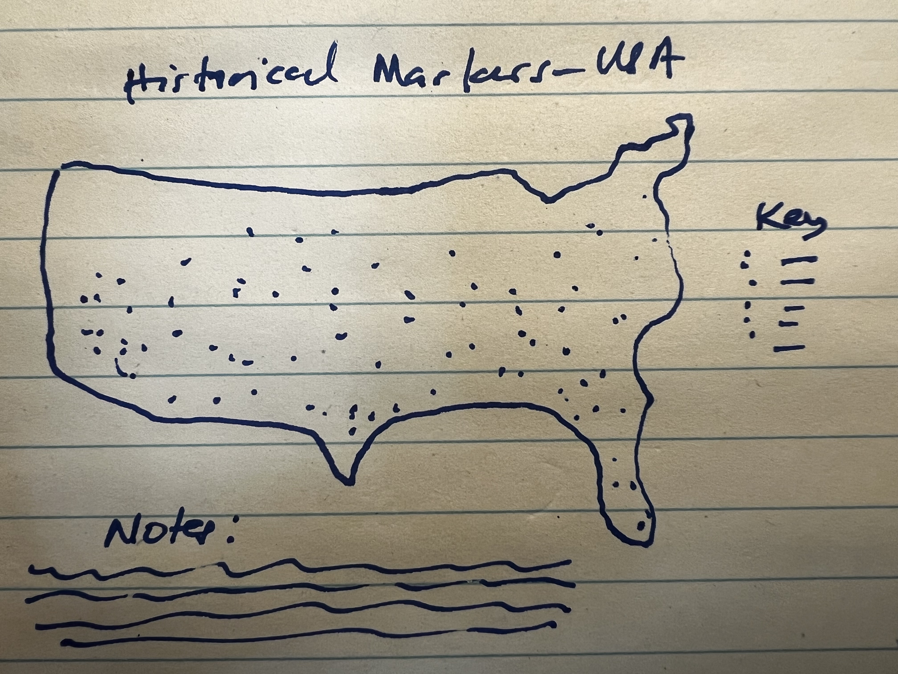

For this week, the TidyTuesday1 data cames from Historical Marker Database USA Index. The parent website essentially tries to provide historical information through the lens “of roadside and other permanent outdoor markers, monuments, and plaques”. The overall tidytuesday project also contains information on places that do not have entries in the HMDB database. This is an effort to encourage us to perhaps find markers that need to be added to HMDB database. Datails on this TidyTuesday project may be found on Github-Rfordatascience.
POSSIBLE VISUAL REPRESENTATION
Presently, I am still on a drive to create infographics. This week I want to practice a bit with mapping data. Maps can be very informative, and I have experience with them through Tableau. I would like to improve my ability with maps using R. So here we go. I am modeling my project on Georgios Karamanis. Karamanis is a great follow on Twitter when it comes to data visual documents and for TidyTuesday projects. Karamanis is especially good at creating visual documents in map form.
Personally, I am going for a standard map, something that looks like the sketch in Figure 01 (don’t mind the rough handwriting, as it is what I broadly want to create). A couple of weeks back, I created a tile map (a variation on the HEX tile map variety). In this case, it may be useful to create an actual map, as the location and proximity to things typically shown on a map are important to interpreting this data. It may also be a good idea to employ a tool such as Leaflet (or Plotly) which can add some interactivity. I will have to complete the static info-graphic and then I will consider some interaction.

Figure 1 - Sketch for planned infographic.
Karamanis created the below (Figure 02) for TidyTuesday and another creator Erin Franke created the below (Figure 03). Both really great and akin to what I am thinking of doing.
I am going to keep things a bit simple use the packages I am familiar with.
First we have tidyverse which is my standard workhorse data wrangling suite of packages. Easy to use with an intuitive language.2019Wickham-td?
The sf package is critical for encoding spatial vector data according to the Simple Features standard described by the Open Geospatial Consortium (OGC) and International Organization for Standardization (ISO). I have used it a bit in the past particularly for getting data to create plots in Leaflet.2
This is my introduction to the skimr pckage. However I have learned that it allows you to create quick summary statistics about variables in data frames, tibbles, data tables and vectors. Very handy for viewing data in the TidyTuesday data object.3
The camcorder package can be used to store the plots or images generated.4
I typically use the janitor package for importing data in a clean manner. The clean_names() function in particular is a favorite of mine.5
I have also included the gt package, which serves to create beautiful html tables. I need to become a bit more comfortable with that package.6
DATA
There are two dataframes in the data object from this week. There is: - First we have historical_markers.csv, which contains the historical markers and information data provided by the HMDB. - Secondly we have the no_markers.csv, which contains the
You can access the access the data dictionary or codebook by clicking the link. I have also posted them below
Code
## DOWNLOAD USING API [VIA TIDYTUESDAYR PACKAGE] -----# tuesdata <- tt_load(2023, week = 27)# # historical_markers <- tuesdata$`historical_markers` %>%# clean_names() %>%# write_csv("data/historical_markers.csv")# # no_markers <- tuesdata$`no_markers` %>%# clean_names() %>%# write_csv("data/no_markers.csv")# ALTERNATIVE DOWNLAOD (DIRECT LINK) ----# historical_markers <- read_csv("https://raw.githubusercontent.com/rfordatascience/tidytuesday/master/data/2023/2023-07-04/historical_markers.csv")#no_markers <- readr::read_csv('https://raw.githubusercontent.com/rfordatascience/tidytuesday/master/data/2023/2023-07-04/no_markers.csv')## READ IN DATA [DOWNLOADED ALREADY USING ABOVE] ----df1 <-read_csv("data/historical_markers.csv")df2 <-read_csv("data/no_markers.csv")## READ IN DATA DICTIONARIES ----ddhm <-read_csv("data/ddhistorical_markers.csv")ddnm <-read_csv("data/ddno_markers.csv")
You can access the access the data dictionary or codebook by clicking the link. I have also posted them below
Number of this marker in the state numbering scheme.
title
character
Main title of the marker.
subtitle
character
Subtitle of the marker, if any.
addl_subtitle
character
Additional subtitle text.
year_erected
integer
The year in which the marker was erected.
erected_by
character
The organization which erected the marker.
latitude_minus_s
double
The latitude of the marker.
longitude_minus_w
double
The longitude of the marker.
street_address
character
The street address of the marker, if available.
city_or_town
character
The city, town, etc in which the marker is located.
section_or_quarter
character
The section of the city, town, etc, when available.
county_or_parish
character
The county, parish, or similar designation in which the marker appears.
state_or_prov
character
The state, province, territory, etc in which the marker appears.
location
character
A description of the marker's location.
missing
character
Whether the marker is "Reported missing" or "Confirmed missing". NA values indicate that the marker has neither been reported missing nor confirmed as missing.
link
character
The HMDb link to the marker. Links include additional details, such as photos and topic lists to which this marker belongs.
Number of this marker in the state numbering scheme.
title
character
Main title of the marker.
subtitle
character
Subtitle of the marker, if any.
addl_subtitle
character
Additional subtitle text.
year_erected
integer
The year in which the marker was erected.
erected_by
character
The organization which erected the marker.
latitude_minus_s
double
The latitude of the marker.
longitude_minus_w
double
The longitude of the marker.
street_address
character
The street address of the marker, if available.
city_or_town
character
The city, town, etc in which the marker is located.
section_or_quarter
character
The section of the city, town, etc, when available.
county_or_parish
character
The county, parish, or similar designation in which the marker appears.
state_or_prov
character
The state, province, territory, etc in which the marker appears.
location
character
A description of the marker's location.
missing
character
Whether the marker is "Reported missing" or "Confirmed missing". NA values indicate that the marker has neither been reported missing nor confirmed as missing.
link
character
The HMDb link to the marker. Links include additional details, such as photos and topic lists to which this marker belongs.
As I noted above, I just discovered the skimr package and all of its capabilities. I think I will be employing it as my precursor to the data wrangling step. You can find more information about using skimr here
Code
skim(df1)
Data summary
Name
df1
Number of rows
42724
Number of columns
17
_______________________
Column type frequency:
character
13
numeric
4
________________________
Group variables
None
Variable type: character
skim_variable
n_missing
complete_rate
min
max
empty
n_unique
whitespace
marker_no
0
1.00
1
10
0
27207
0
title
0
1.00
3
100
0
38122
0
subtitle
31878
0.25
1
100
0
6736
0
addl_subtitle
38194
0.11
1
93
0
1253
0
erected_by
1292
0.97
4
500
0
8963
0
street_address
20189
0.53
1
50
0
19683
0
city_or_town
0
1.00
3
34
0
6887
0
section_or_quarter
35943
0.16
3
43
0
1639
0
county_or_parish
0
1.00
5
29
0
1453
0
state_or_prov
0
1.00
4
20
0
52
0
location
563
0.99
19
245
0
37522
0
missing
41543
0.03
16
17
0
2
0
link
0
1.00
30
34
0
42724
0
Variable type: numeric
skim_variable
n_missing
complete_rate
mean
sd
p0
p25
p50
p75
p100
hist
marker_id
0
1.00
106708.80
65940.89
12.00
44936.50
105252.00
163863.25
226438.00
▇▆▆▇▅
year_erected
8038
0.81
1982.65
30.03
1852.00
1966.00
1989.00
2006.00
2023.00
▁▁▂▆▇
latitude_minus_s
0
1.00
35.95
4.52
18.46
32.69
35.62
39.12
64.94
▁▇▆▁▁
longitude_minus_w
0
1.00
-90.27
12.04
-159.49
-97.29
-86.26
-81.67
-66.09
▁▁▂▇▇
SETUP THE CANVAS
We can achieve this by making use of the camcorder package. This part is always a bit tricky for me, because it requires some understanding of the dimensions of your infographic and how you want to display. I find myself tweaking it as I work through the data.
There are a couple of different ways of creating static maps in R. For most cases you have to import the boundary data or use a shapefile. I am trying to learn how to effectively import boundary data and so I am going to use the following package: rgeoboundaries. With the gb_adm1() function from the rgeoboundaries package, you can retrieve the necessary boundary data. Then with the st_transform() function from the sf package you can convert the boundary data into a simple format for use in R in combination with the st_crs() function also from the sf package. Within the st_crs() function we specify the specific geospatial projection we want. In our case it will transform the spatial object to the EPSG:2163 projection. This constitutes the geospatial projection for USA. And finally, the ms_simplyfy() function from the rmapshaper package simplifies the polygon data. Hence we end up with a dataframe, similar to what we would get if we downloaded a shapefile and imported that for our analysis, complete with a vector contains the requisite polygon data.
Code
# DATAFRAME CONTAINING USA POLYGON DATA ----us <-gb_adm1("usa")%>%st_transform(st_crs(2163)) %>%ms_simplify()# DATAFRAME DECADE OF MONUMENT ERECTION ----df1dec <- df1 %>%mutate(decade = year_erected %/%10*10) %>%filter(!is.na(decade)) %>%mutate(decade =if_else(decade <1900, "1850s-1890s", paste0(as.character(decade), "s")))# Pay attention to the last line which does the following: If the decade variable is 1850, the if_else() function would return the string "1850s -19890s". If the decade variable is 1900, the if_else() function would return the string "1900s".# CREATE VECTOR WITH JUST DECADES COLUMN ----decades <-sort(unique(df1dec$decade))# DATAFRAME WITH MARKERS BY DECADE IN EACH STATE ----# We are selecting the decades in which a state had at least three markers.state_decade <- df1dec %>%group_by(decade) %>%count(state_or_prov, sort =TRUE) %>%slice_max(order_by = n, n =3) %>%# Selecting the top three highest "n" valuesmutate(y =rev(row_number()),state_or_prov =if_else(y ==3, paste0("**", state_or_prov, "**"), state_or_prov),nc =as.character(scales::number(n)),nc =if_else(y ==3, paste0("**", nc, "**"), nc) ) %>%ungroup()## DENSITY PLOT (MARKERS ON MAP OF US) ----# The below creates a scatterplot of the markers_density data, with points colored by decade. The size of the points is controlled by the size parameter. The facet_wrap function is used to create a separate plot for each decade.pl1 <- df1dec %>%ggplot() +geom_pointdensity(aes(x = longitude_minus_w, y = latitude_minus_s), size =0.25) +facet_wrap(vars(decade))pl1# DATAFRAME CONTAINING DATA FROM PLOT# You can extract the data from a ggplot using the ggplot_build() function.df1proj <-ggplot_build(pl1)$data[[1]] %>%st_as_sf(crs =4326, coords =c("x", "y")) %>%st_transform(st_crs(2163)) %>%rename(facet = PANEL) %>%mutate(decade = decades[facet])df1proj
Simple feature collection with 34686 features and 10 fields
Geometry type: POINT
Dimension: XY
Bounding box: xmin: -5612710 ymin: -2241309 xmax: 3577055 ymax: 2915675
Projected CRS: NAD27 / US National Atlas Equal Area
First 10 features:
colour facet group n_neighbors shape size fill alpha stroke
1 #132B43 1 -1 2 19 0.25 NA NA 0.5
2 #132B43 1 -1 2 19 0.25 NA NA 0.5
3 #132B43 1 -1 1 19 0.25 NA NA 0.5
4 #56B1F7 1 -1 1243 19 0.25 NA NA 0.5
5 #56B1F7 1 -1 1243 19 0.25 NA NA 0.5
6 #56B1F7 1 -1 1243 19 0.25 NA NA 0.5
7 #56B1F7 1 -1 1243 19 0.25 NA NA 0.5
8 #56B1F7 1 -1 1243 19 0.25 NA NA 0.5
9 #56B1F7 1 -1 1243 19 0.25 NA NA 0.5
10 #56B1F7 1 -1 1243 19 0.25 NA NA 0.5
geometry decade
1 POINT (-1848417 -542288.4) 1850s-1890s
2 POINT (-1793976 -461971.8) 1850s-1890s
3 POINT (-1732122 -298597) 1850s-1890s
4 POINT (1345297 -1024344) 1850s-1890s
5 POINT (1343407 -1005005) 1850s-1890s
6 POINT (1342361 -1000201) 1850s-1890s
7 POINT (1343228 -1001563) 1850s-1890s
8 POINT (1342309 -1000269) 1850s-1890s
9 POINT (1342296 -1000274) 1850s-1890s
10 POINT (1342497 -1000185) 1850s-1890s
Code
f1 <-"Outfit"f2 <-"Source Serif Pro"pal <-brewer.pal(9, "YlOrRd")[4:9] #The function creates a palette of 9 colors from the YlOrRd sequential color scheme. Furthermore, it indexes into the palette to select the 5 colors from the 4th to the 9th position.# p <-ggplot(df1proj) +geom_sf(data = us, fill ="#F5FEFC", linewidth =0.1) +geom_sf(aes(color = n_neighbors), size =0.4) +geom_richtext(data = state_decade, aes(x =-1.95e6, y =-2.3e6+ y *2e5, label =paste(state_or_prov, nc)), hjust =0, size =2.5, family = f1, fill =NA, label.color =NA, label.padding =unit(0, "lines")) +scale_color_gradientn(colors = pal) +facet_wrap(vars(decade)) +coord_sf(xlim =c(-2e6, 2.5e6), ylim =c(-2.3e6, 0.73e6)) +theme_void(base_family = f1) +theme(legend.position ="none",plot.background =element_rect(fill ="grey99", color =NA),strip.text =element_text(family = f2, face ="bold") )p# t <-ggplot() +geom_text(aes(0, 0, label ="U.S. Historical Markers"), family = f2, size =9.5, hjust =0, fontface ="bold") +geom_text(aes(0, -0.55, label ="Location of new historical markers in The Historical Marker\nDatabase by decade erected. The 3 states with the most\nnew markers are shown for each decade."), family = f2, size =4, hjust =0, lineheight =0.9) +geom_text(aes(0, -1, label ="Source: The Historical Marker Database · Graphic: Georgios Karamanis"), family = f1, size =3, hjust =0) +scale_x_continuous(limits =c(0, 15)) +scale_y_continuous(limits =c(-1, 0.5)) +coord_cartesian(clip ="off") +theme_void()# p +inset_element(t, left =0.5, right =0.9, bottom =0.08, top =0.28)